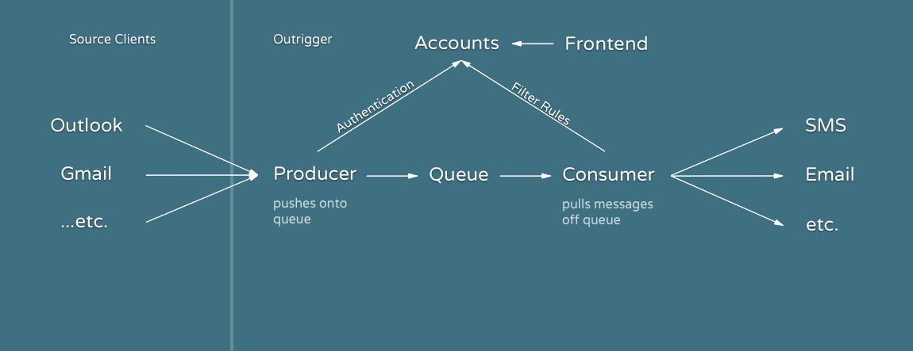

Maintainability
At 11,523 Lines of JavaScript spread across 83 files, Outrigger is reasonably maintainable.
Outrigger only requires 52 dependencies from NPM, most of which are used for logging.
Avery Wagar
May 17th, 2018
Industrial Revolution: The Industrial Revolution was a period of major industrialization that took place during the late 1700s and early 1800s. This time period saw the mechanization of agriculture and textile manufacturing and a revolution in power, including steam ships and railroads, that effected social, cultural and economic conditions.
- Investopedia
The Industrial Revolution was a period of major industrialization that took place during the late 1700s and early 1800s. This time period saw the mechanization of agriculture and textile manufacturing and a revolution in power, including steam ships and railroads, that effected social, cultural and economic conditions.
The Industrial Revolution was the transition to new manufacturing processes in the period from about 1760 to sometime between 1820 and 1840.
- Wikipedia
A “telegraph” is a device for transmitting and receiving messages over long distances, i.e., for telegraphy. … A telegraph message sent by an electrical telegraph operator or telegrapher using Morse code (or a printing telegraph operator using plain text) was known as a telegram.
Outrigger is a better out of office responder. With smarter email notifications for Gmail and G-Suite users.
The idea for Outrigger began on a family vacation and was shaped by the observation that most email out of office (OOO) messages either create too much friction when a message is truly urgent or rub the original sender the wrong way. As a result, people rarely set them and when they do, many check their email anyway.
There are 3.7 billion email accounts world wide. Each day, humans sent a staggering 269 billion emails.
Every day, the average office worker receives 121 emails and sends out 40 emails.
We designed and built Outrigger to help people, including ourselves, create some space between themselves and their email inboxes to better focus on whatever’s important.
 With a database storing user accounts, Outrigger is able to leverage enough of Google’s APIs to allow for a maximum of 6-16% CPU usage during peak use hours.
Currently, Outrigger is running on a single free tier instance on AWS. Which will be free until the end of 2019, afterwards Outrigger will cost 24 dollars a month to run.
At 11,523 Lines of JavaScript spread across 83 files, Outrigger is reasonably maintainable.
Outrigger only requires 52 dependencies from NPM, most of which are used for logging.